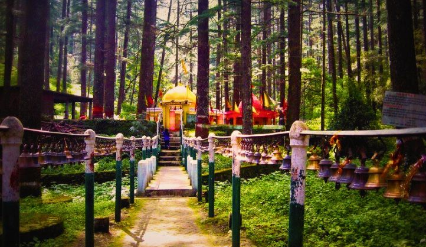
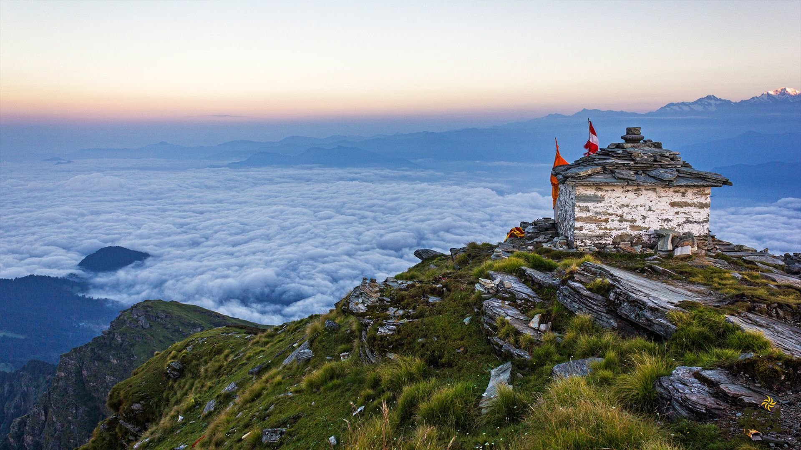
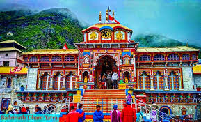
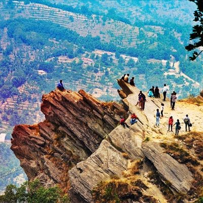

Must do experience in UTTARAKHAND



Tarkeshwaar-Mahadev
BEST TIME TO VISIT :-April to June
For further information visit the site

Valley of Flowers National Park
BEST TIME TO VISIT :-July to September.
For further information visit the site

Chopta - Popular As Mini-Switzerland
BEST TIME TO VISIT :-March and May
For further information visit the site

Badrinath
BEST TIME TO VISIT :-May to June and September to October
For further information visit the site

Chauli ki jali
BEST TIME TO VISIT :- March to May
For further information visit the site

Binsar Wildlife Sanctuary
BEST TIME TO VISIT :- May to June and September to October
For further information visit the site